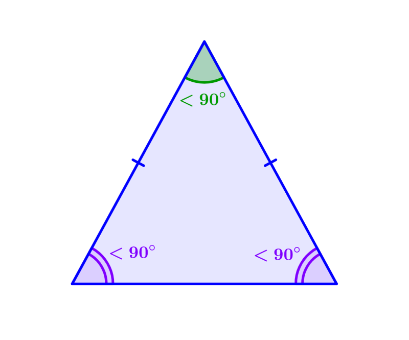

El triángulo isósceles es aquel que tiene dos lados con la misma longitud. Asimismo, los dos ángulos que están frente a los lados iguales también miden lo mismo. Este tipo de polígono es un caso particular dentro de los tipos de triángulo según la longitud de sus lados. Vale recordar que un polígono es una figura geométrica bidimensional que se constituye de la unión de distintos puntos (que no formen parte de la misma línea) mediante segmentos de recta. De ese modo, se construye un espacio cerrado.
Vértices: A, B, C.
Lados: AB, BC, AC, cada uno de los cuales mide, a, b y c, respectivamente, siendo los dos lados iguales AB y BC. Entonces, a=b.
Ángulos interiores: x,y,z. Los tres suman 180º. Cabe notar que si a=b, entonces z=y.
Ángulos exteriores: u,v,w. Cada uno es suplementario al ángulo interior del mismo lado. Es decir, se cumple que: 180º= v+z=u+y= w+x.

Área(A): En este caso, nos basamos en la fórmula de Herón donde s es el semiperímetro, es decir, s=P/2
Perímetro(P): P=a+b+c. Si a=b P=a+a+c=2a+c